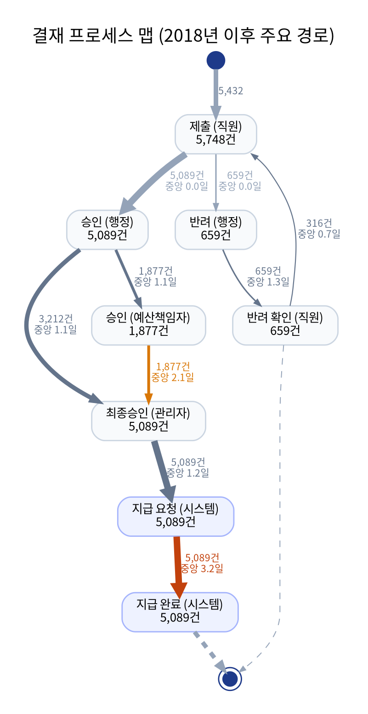
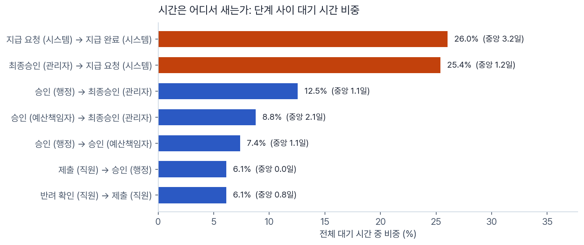
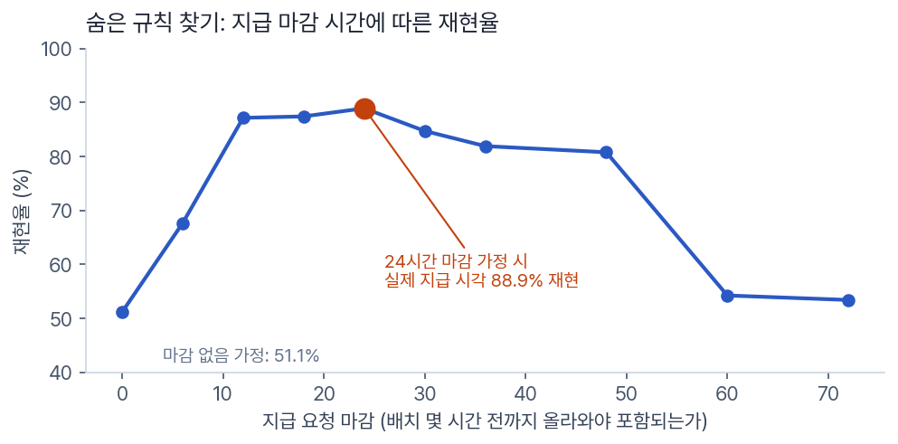
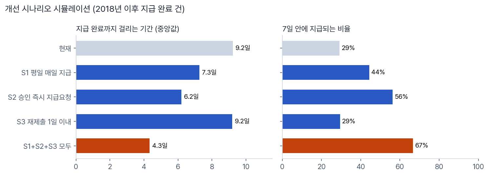
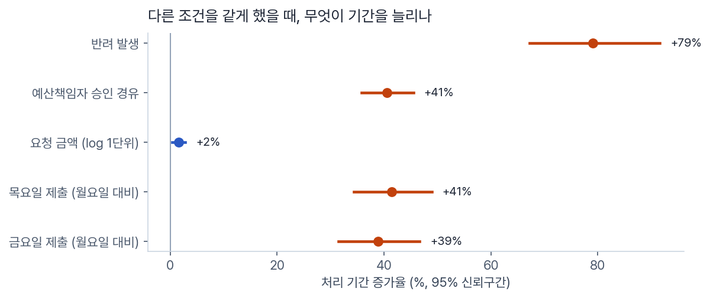

실제 업무 시스템 로그 6,886건으로 결재 흐름을 복원하고, 지연의 원인을 찾아 개선 효과를 시뮬레이션한 프로세스 마이닝 프로젝트
| 기간 | 2026.10 |
| 인원 | 개인 |
| 데이터 | BPI Challenge 2020 Request For Payment (실제 업무 로그, 6,886건 · 이벤트 36,796개) |
| 역할 | 분석 설계, 가설 수립과 검증, 해석 전체. 코드 구현은 ChatGPT·Claude와 함께 진행 |
| 주요 기술 | Python, pandas, pm4py, statsmodels, Graphviz |
| GitHub | sung-ju-park/process-mining-payment-approval |
한 대학에서 직원이 비용 지급을 요청하면 행정·예산책임자·관리자의 결재를 거쳐 시스템이 지급합니다. 2018년 이후 지급까지 중앙값은 9.2일, 7일 안에 끝나는 건은 29%뿐이었습니다. 어디서 시간이 새고, 무엇을 바꾸면 얼마나 빨라지는지를 로그만으로 답하는 것이 목표였습니다.
로그에서 직접 계산해 그린 결재 프로세스 맵입니다. 선이 굵을수록 많이 지나가고, 붉을수록 다음 단계까지 오래 기다리는 구간입니다.

단계 사이 대기 시간을 모두 더하면, 결재자가 아니라 최종 승인 이후 두 구간이 전체의 51.9%를 차지했습니다.

지급은 99.6%가 월·목 17시에 처리되는 주 2회 배치였습니다. 그런데 "요청 후 다음 배치에 지급"이라고 가정하면 실제 지급 시각과 51.1%만 맞았습니다. 이 상태로 개선 시나리오를 계산하면 숫자를 믿을 수 없었습니다.
배치 직전에 올라온 요청은 그 배치에 못 들어가는 마감 규칙이 있다고 가정하고, 마감 시간을 0~72시간으로 바꿔 가며 실제 지급 시각과 비교했습니다. 배치 24시간 전까지 올라온 요청만 포함될 때 재현율이 88.9%로 가장 높았고, 시나리오는 이 규칙 위에서 계산했습니다.

최종 승인 즉시 지급 요청 자동 생성, 평일 매일 지급, 반려 후 재제출 지연 단축을 함께 적용하면 지급까지 중앙값 9.2일 → 4.3일, 7일 내 지급 29% → 67%로 개선됩니다.

다른 조건을 통제한 회귀분석에서 반려는 처리 기간을 +79%, 예산책임자 승인 경유는 +41% 늘렸고 요청 금액의 영향은 거의 없었습니다. 결재 규칙 6가지 점검에서는 위반이 5건(0.09%)뿐이었습니다. 통제는 잘 되고 있고, 문제는 속도라는 결론입니다.
